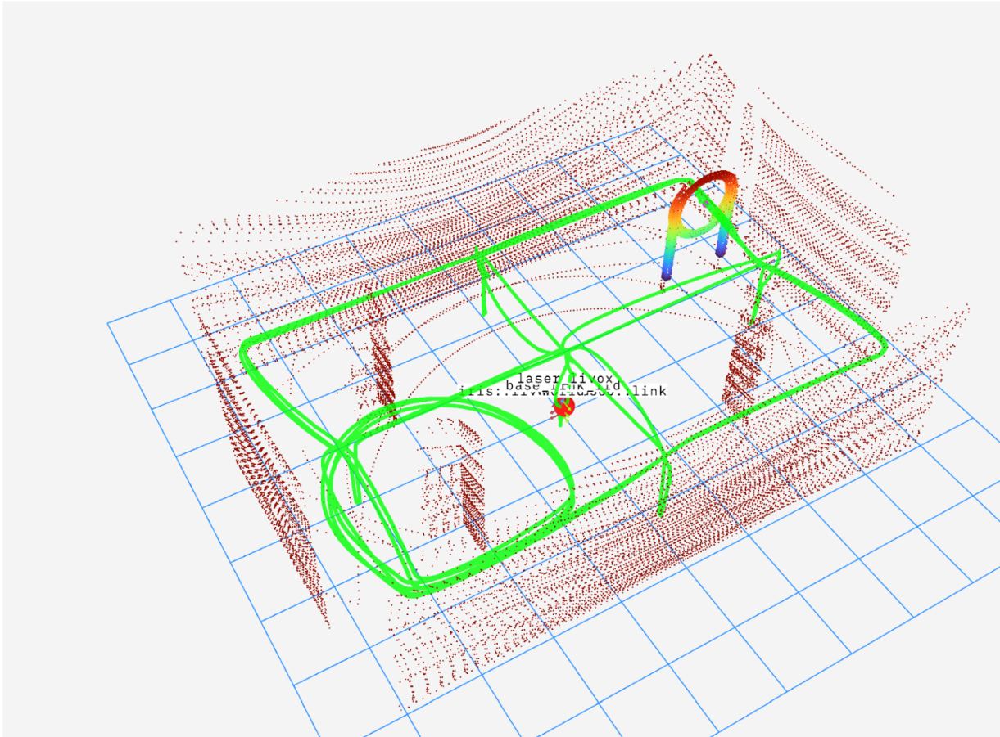

无人机配送航程挑战赛
全球校园人工智能算法精英大赛 · AIC · 2025.12
项目概述
这次航程挑战赛是 RoboCup 之后的一次技术复用。此前在感知、控制与实机调试中积累的经验，让我们面对后续比赛时从容了许多，技术实现也更为顺手。
我负责无人机配送航程任务的路径规划，结合比赛场地安排巡航点与投送路线。
- 参与工作
- 配送航程路径规划 · 任务流程联调
- 团队成果
- 国家级二等奖
我做的部分
- 根据场地组织巡航点和投送路线。
- 复用 RoboCup 穿环任务中的圆环识别。
- 参与路径执行、投送位置及任务切换的联调。
实现记录
路线与任务衔接
这一项目的工作集中在配送航程路径规划，以及路径执行、投送位置和任务切换之间的衔接。
Foxglove 点云与飞行记录
这张 Foxglove 截图记录了无人机配送航程挑战赛中的场地点云、障碍物识别与飞行轨迹，可以对照观察飞行路线和场地的空间关系。
